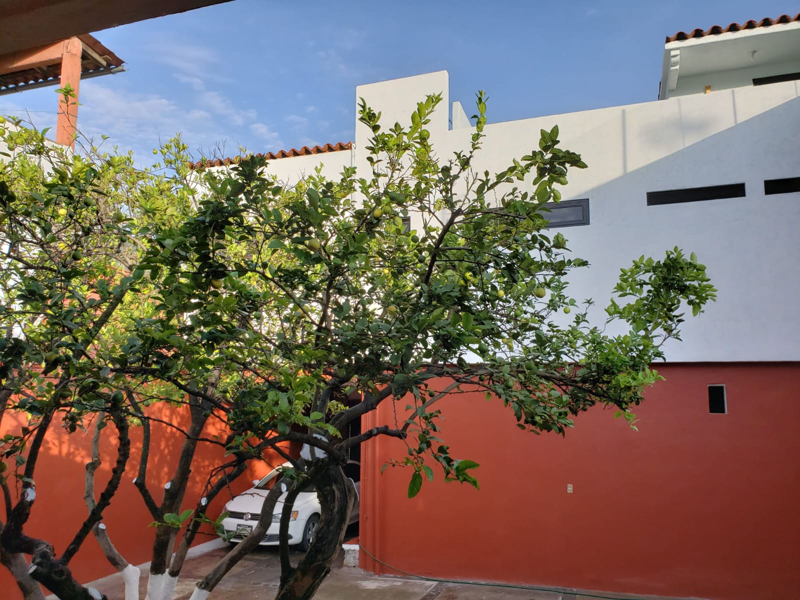
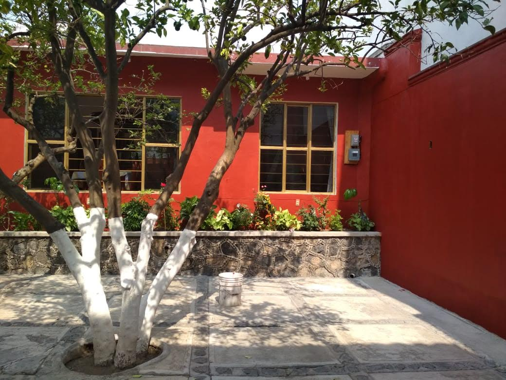
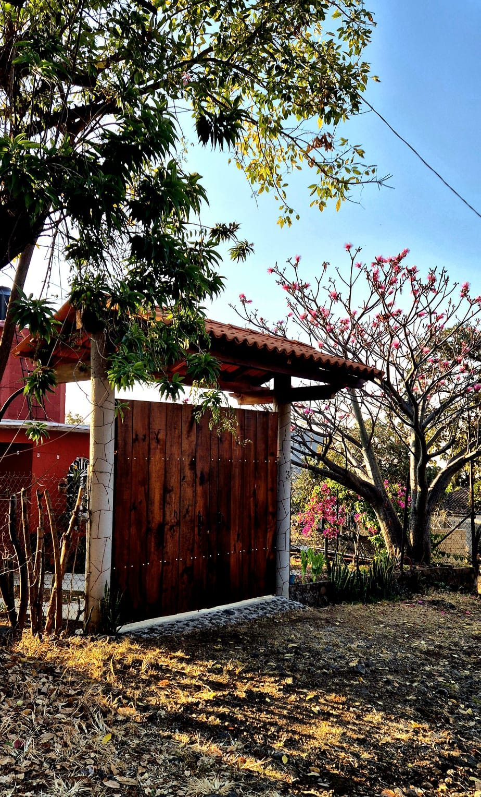
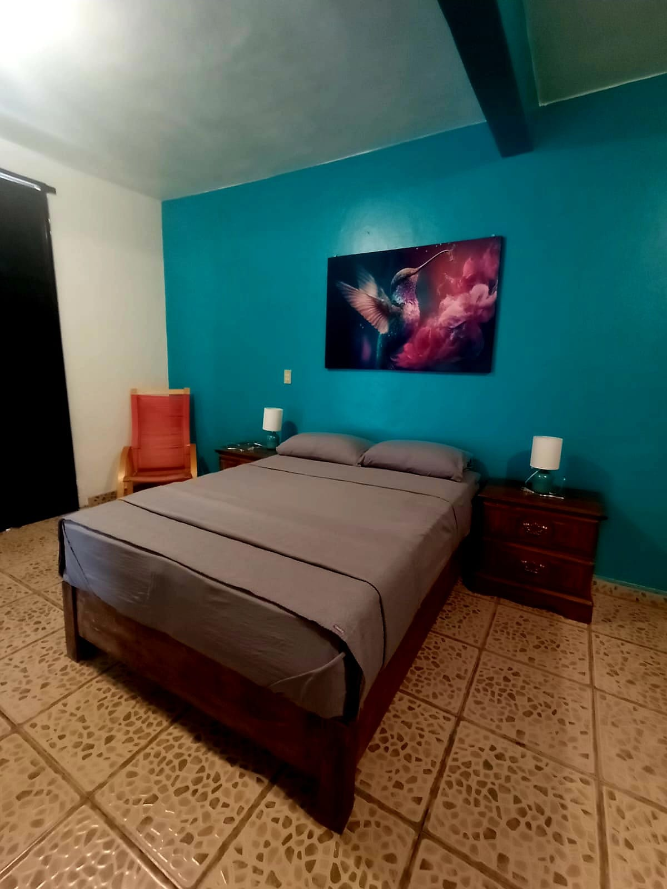

4 propiedades únicas en el corazón del Pueblo Mágico.
A sólo a 93 km de la Ciudad de México.
Dónde quedarte
Cuatro espacios únicos, cada uno pensado para que disfrutes Malinalco con calma, comodidad y tranquilidad.

Espacio completo con toda la esencia de Malinalco. Diseño auténtico, instalaciones de primera y ubicación privilegiada cerca de la zona arqueológica.

Refugio ideal para desconectarte del ritmo de la ciudad. Tranquilidad, naturaleza y todos los servicios que necesitas para una estancia perfecta.

Alojamiento entero con arquitectura auténtica de Malinalco. Casa con 2 habitaciones, totalmente equipada y rodeada de naturaleza con todo el encanto del Pueblo Mágico.

Acogedora habitación para dos personas, en el barrio más seguro de Malinalco. A 5 min del centro, con estacionamiento privado y WiFi de alta velocidad.
El destino
Pueblo Mágico del Estado de México con clima perfecto todo el año (26-30°C), gastronomía extraordinaria, zona arqueológica única y una energía que te abraza desde que llegas. A solo 70 km de Toluca o 53km de Cuerna.
Desde truchas al estilo Malinalco y mezcal artesanal, hasta la zona arqueológica tallada en roca viva — este lugar tiene todo para que regreses una y otra vez.
Ver guía gastronómicaGuía gastronómica
Nuestra selección personal de los mejores lugares. Representa la experiencia viva de los visitantes de todo el mundo.
Experiencia gastronómica en 3 tiempos. Cocina de autor que celebra los sabores locales de manera creativa y elegante.
📍 Ver en MapsCortes y mariscos deliciosos a precio justo. El favorito de quienes buscan sabor sin complicaciones.
📍 Ver en MapsCocina gourmet fusionada con la gastronomía malinalquense. Una experiencia que no encontrarás en ningún otro lugar.
📍 Ver en MapsBotana, hamburguesas, alitas y mixología de primer nivel. Para las noches que piden algo especial.
📍 Ver en MapsUn café, una baguette o una tardecita deliciosa. Parada obligada para el desayuno o la merienda.
📍 Ver en MapsUna trucha, un mezcal o platillos típicos: siempre una gran opción. La esencia gastronómica de Malinalco.
📍 Ver en MapsHamburguesas o pizzas artesanales de primera. Opción perfecta para una comida casual e informal.
📍 Ver en MapsBarbacoa, Pizzas de Chapulines, Mole Almendrado, Tamal Oaxaqueño. El lugar para arrancar la tarde con gran gastronomía Oaxaqueña.
📍 Ver en MapsBuenos desayunos, platillos exóticos y una vista extraordinaria. Ideal para empezar el día con energía y panorama.
📍 Ver en MapsSabor inigualable, buenas bebidas y carta completa. El lugar que siempre está lleno — y uno siempre entiende por qué.
📍 Ver en MapsQuiénes somos
8 años recibiendo viajeros de los 5 continentes en Malinalco. No rentamos espacios — creamos experiencias. Cada huésped se va de Malinalco con la promesa de volver pronto.
"El lugar superó todas nuestras expectativas. Las instalaciones impecables, la atención increíble y las recomendaciones locales hicieron que nuestra estancia fuera perfecta."
"Exactamente como en las fotos. El espacio tiene todo lo necesario, el anfitrión siempre disponible. Sin duda volvemos. Malinalco es un destino que no te puedes perder."
"Excelente ubicación, muy cerca del centro y de la zona arqueológica. El departamento limpio, cómodo y con todos los servicios. Regresaremos pronto."
Escríbenos
Podemos ayudarte a elegir la opción ideal, coordinar tu llegada y darte todos los tips locales que necesitas para vivir Malinalco al máximo.